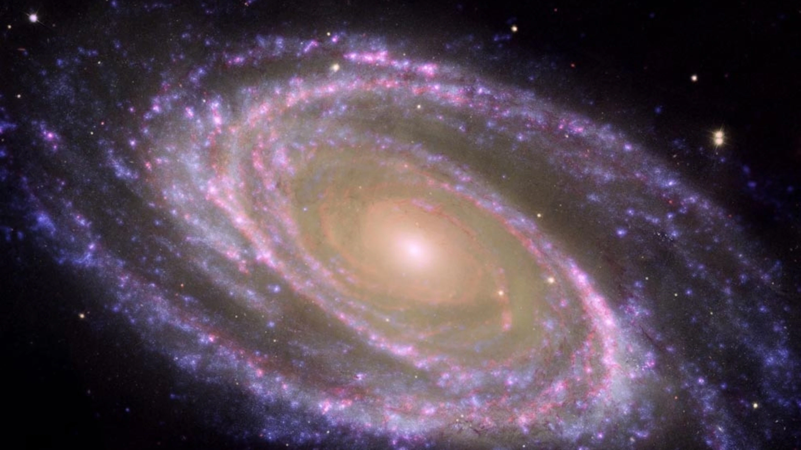
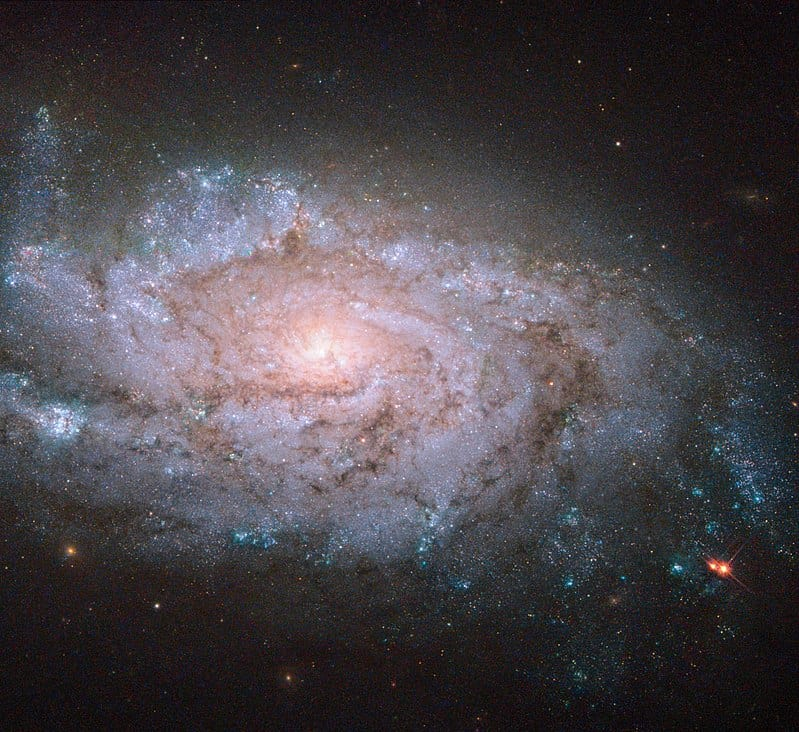
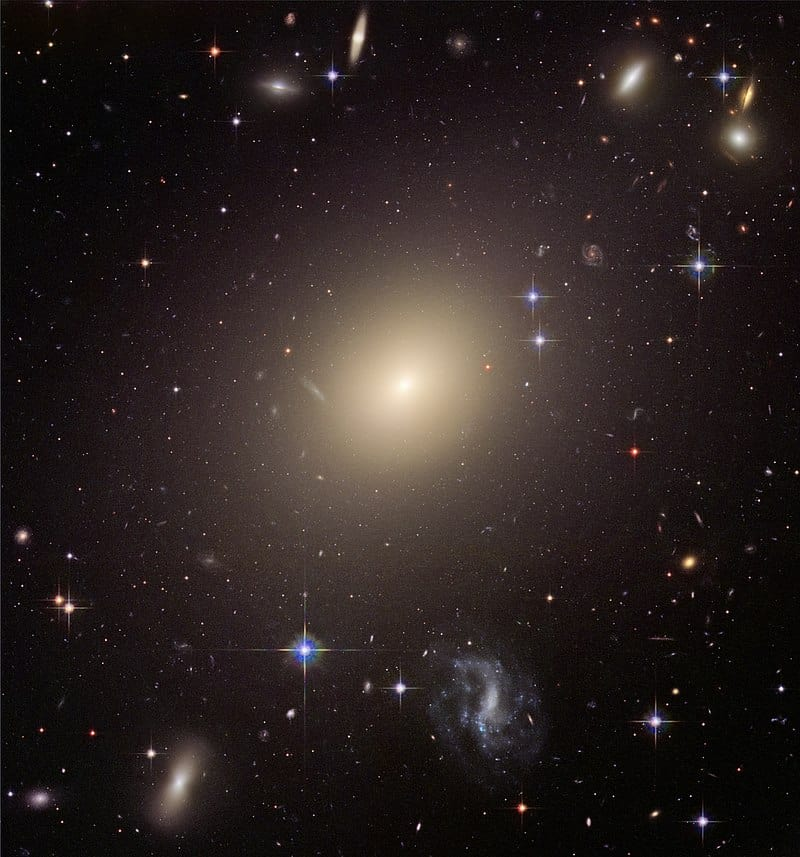
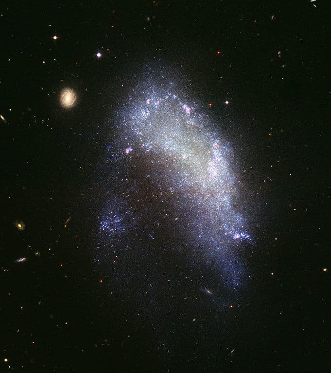

THE BUILDING BLOCKS OF THE UNIVERSE
Galaxies are vast cosmic islands of stars, gas, dust, and dark matter held together by gravity.From supermassive black holes to giant bursts of star formation to titanic collisions between galaxies, these discoveries allow astronomers to see the current properties of galaxies as well as examine how they formed over time.
Spiral Galaxies

They have a flat, spinning disk with a central bulge surrounded by spiral arms. The spinning motion reaches speeds of up to hundreds of kilometers/miles per second. This usually can cause matter in the disk to take on a distinctive spiral shape, like a cosmic pinwheel. The bulge located in the center is made up of older, dimmer stars, and is thought to usually contain a supermassive black hole.
Elliptical Galaxies

Elliptical galaxies have an elongated spherical shape and lack a nucleus or bulge at the center. Although there is no nucleus, the galaxy is still brighter in the center and becomes less bright toward the outer edges of the galaxy.Their light is dominated by older reddish stars. They appear to also lack spiral arms. The stars, gases and other materials are spread throughout an elliptical galaxy. Elliptical galaxies can be nearly round or long and cigar-shaped.
Irregular Galaxies

Irregular galaxies have no definite shape, though they are in constant motion like all other galaxies. They have a chaotic appearance as they don’t seem to possess a nuclear bulge or traces of spiral arms.Some irregular galaxies were once spiral or elliptical galaxies but were deformed by an uneven external gravitational force. Irregular galaxies may contain abundant amounts of gas and dust Irregular galaxies are commonly small, about one-tenth the mass of the Milky Way galaxy.